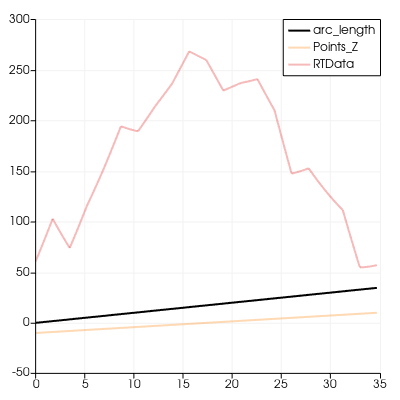

🎯 SciVisAgentBench Evaluation Report
📊 Overall Performance
Overall Score
49.5%
483/975 Points
Test Cases
15/20
Completed Successfully
Avg Vision Score
58.5%
Visualization Quality
Avg Code Similarity
0.0%
Code Quality Match
PSNR (Scaled)
8.09 dB
Peak SNR (8/15 valid)
SSIM (Scaled)
0.5010
Structural Similarity
LPIPS (Scaled)
0.5788
Perceptual Distance
Completion Rate
75.0%
Tasks completed
ℹ️ About Scaled Metrics
Scaled metrics account for completion rate to enable fair comparison across different evaluation modes. Formula: PSNRscaled = (completed_cases / total_cases) × avg(PSNR), SSIMscaled = (completed_cases / total_cases) × avg(SSIM), LPIPSscaled = 1.0 - (completed_cases / total_cases) × (1.0 - avg(LPIPS)). Cases with infinite PSNR (perfect match) are excluded from PSNR calculation.
🔧 Configuration
📝 chart-opacity
51/65 (78.5%)
📋 Task Description
Create a wavelet object.
Create a plot over line chart from the wavelet with three paths: arc_length, Points_Z, and RTData variables with opacity for arc_length 1 and opacity for Points_Z and RTData 0.3.
Save a screenshot in "chart-opacity/results/{agent_mode}/chart-opacity.png".
Finally, save the ParaView state as "chart-opacity/results/{agent_mode}/chart-opacity.pvsm"
🖼️ Visualization Comparison
Ground Truth

Agent Result
Image not available📏 Vision Evaluation Rubrics
📊 Detailed Metrics
Visualization Quality
39/40
Output Generation
5/5
Efficiency
7/10
Completed in 15.58 seconds (very good)
PSNR
30.61 dB
SSIM
0.9778
LPIPS
0.0493
Input Tokens
170
Output Tokens
952
Total Tokens
1,122
💻 Code Similarity
0/10
Code similarity: 0.000 (scaled to 0/10 points)
Ground Truth: SciVisAgentBench-tasks\chatvis_bench\chart-opacity\GS\chart-opacity_gs.py
Result File: SciVisAgentBench-tasks\chatvis_bench\chart-opacity\results\pvpython\chart-opacity.py